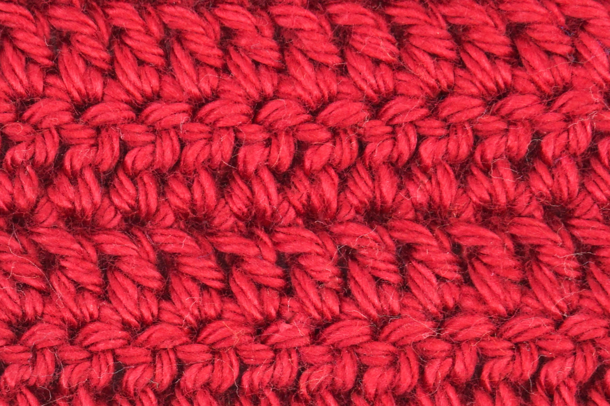
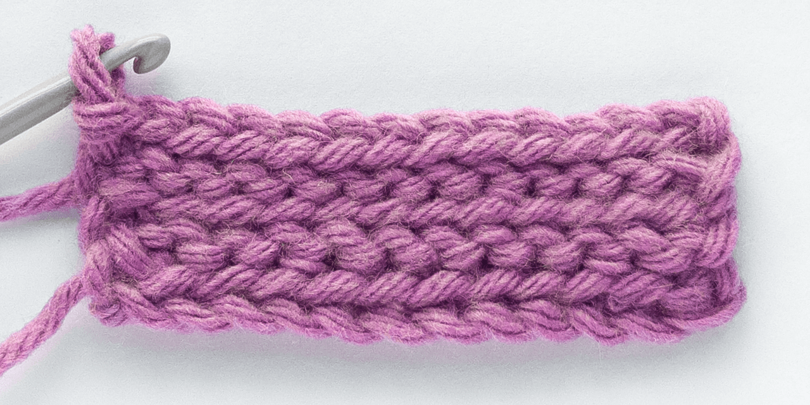

Con crochet se pueden realizar diferentes trabajos con diferentes diseños.
Esto dependerá del grosor de la aguja, pero además también del punto que se esté tejiendo.
Los siguientes son algunos de los puntos que existen y los más básicos:
Para este punto se inserta la aguja por un punto, se engancha lana en la aguja y se expulsa por el mismo agujero por el que entró.
Así quedan dos aros en la aguja, después se engancha lana una vez más y después se expulsa esta por los dos ganchos de la aguja.
Para este punto se hace algo similar que para el punto bajo. La difrencia está en que antes de ingresar la aguja por el primer punto, se envuelve lana en la aguja.
Así cuando se expulse la aguja del punto quedarán tres aros. Se enrolla lana en la aguja y se expulsa por los tres aros.
Este punto es como el medio alto, pero cuando se tienen los tres aros en la lana no se expulsa por los tres sino que se va sacando la lana por partes, de a dos aros.
En este punto solo se ingresa la aguja por el punto, se enrolla lana y se saca tanto por el punto en el que ingresó como en el aro que estaba inicialmente en la aguja.
Así, también hay diferentes maneras de introducir la aguja, como: